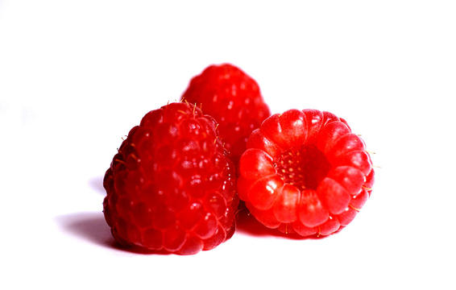
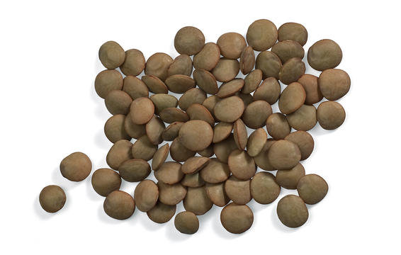
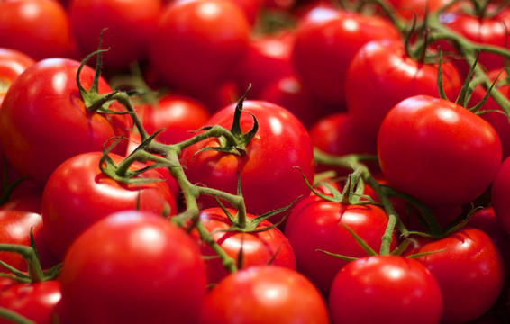
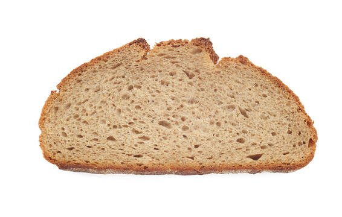
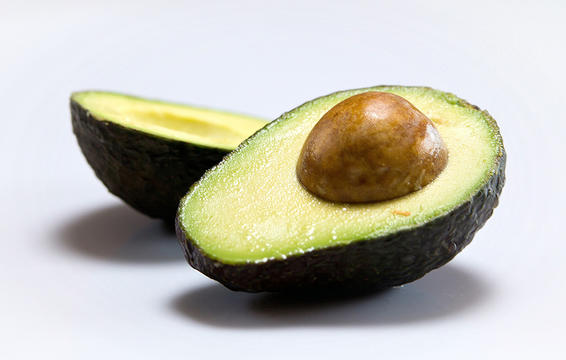
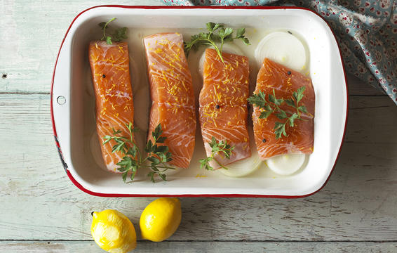
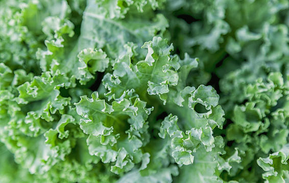

| Healthy Foods | Image | Description |
|---|---|---|
| Raspberries |  |
The typical American eats less than 10 grams of fiber a day, when the recommendation is for 20 to 30 grams. When it comes to fruit, raspberries are fiber champs. A cup packs 8 grams, according to the USDA. |
| Lentils |  |
lentils and split peas are tops when it comes to digestion-aiding fiber. |
| Canned pumpkin | Research from the Journal of the National Cancer Institute links carotenoids like beta-carotene to lower rates of many cancers, and breast cancer in particular. That makes foods loaded with these healthy antioxidants great additions to your diet. Any red, yellow, purple, or orange vegetables—as well as dark leafy greens—are going to be packed with carotenoids. But orange carrots and canned pumpkin are beta-carotene superstars. |
|
| Cooked tomatoes |  |
Cooking tomatoes may help your body absorb more of their healthy antioxidants, says research in the Journal of Agricultural and Food Chemistry. |
| Sprouted grains |  |
No one is telling you to go nuts with bread. But modest amounts of healthy whole grains—the "sprouted" kinds that contain the grain's entire bran, germ, and endosperm—are one of the few good dietary sources of tocotrienols, a type of vitamin E that may lower your risk for age-related brain diseases like Alzheimer's. |
| Walnuts | Eating the right types of fatty acids can lower your risk for diabetes as you age. (Never ignore these 8 warning signs of diabetes.) In particular, the types of polyunsaturated fatty acids found in walnuts may help protect you from the disease, according to research from the Harvard School of Public Health. Most other nuts and seeds are also good sources of these healthy fatty acids. |
|
| Olive oil | Plant-based oils are another good source of healthy polyunsaturated fatty acids—the ones that Harvard study linked with lower rates of diabetes. While soybean and sunflower oil pack a lot of "polys". |
|
| Avocados |  |
Avocados are a good source of this hunger-stifling macronutrient. |
| Salmon |  |
Eating a Mediterranean-style diet heavy on, well, most of the items on this list can cut your risk of death due to heart disease by 37%—roughly twice the benefit you'd get taking statins, according to a recent large-scale study from Italian researchers. |
| Kale |  |
When it comes to healthful nutrients, kale has few equals. Perhaps most helpfully, kale is loaded with alpha-lipoic acid (ALA), an antioxidant that helps your body turn glucose into energy and keeps your blood sugar levels in check. Research has linked ALA to lower rates of diabetes, stroke, glaucoma, and other disease. |